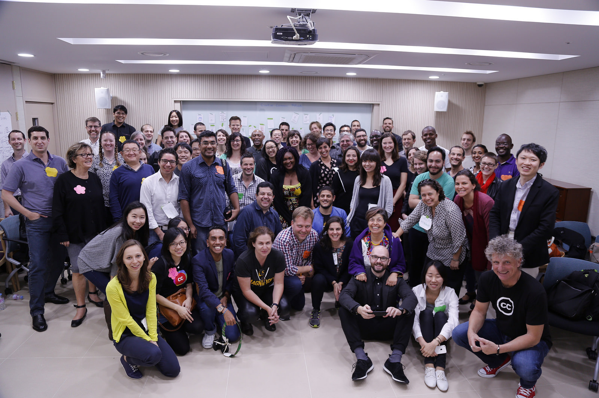
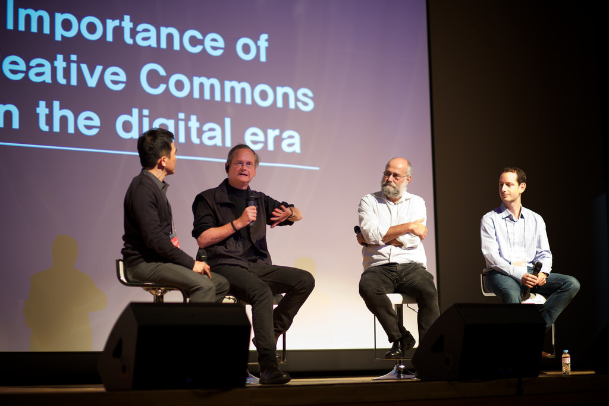

2015-12-04

photo by CCKorea on Flickr, CC BY 2.0
2015 的 CC全球高峰會（CC Global Summit）今年10月在韓國首爾舉辦，吸引全球各地 CC 計劃的愛好者齊聚一堂，分享近年發展及未來展望。為此，台灣創用CC計畫再度前往韓國，這次更加入了合作夥伴開放文化基金會共同組成「創用遠征團」，一同參與盛會。
在 10 月 14 日，雖然大會正式的議程尚未開始，但依照慣例，在正式議程的前一天有所謂的「CC 合作組織閉門會議」，一般喚做「Day 0」，多少能看出一點 CC 和資訊科技的關聯（程式語言中，第一個數通常說的是 0，而不是 1）。說「閉門」，其實也不算那麼封閉，會議仍接受各合作組織邀請相關單位（例如這次的開放文化基金會便以這種身份參與），只是研討內容通常關係著 CC 組織上的發展方向，讓組織的成員參與也是理所當然。在會議中大家針對社群凝聚、CC 發展、資金來源與規劃等項目進行討論，算是個大會前讓個合作單位再度熟悉，並進入「備戰狀態」的熱身。

photo by CCKorea on Flickr, CC BY 2.0
10 月 15 日大會正式開幕，主議程頭兩天在韓國國家博物館舉辦，由風格各異但一樣精彩的主題演講與座談會來開場。CC 的執行長 Ryan Merkley 與韓國CC主持人 Jay Yoon、哈佛法學院 Yochai Benkler 教授等人皆上台分享與闡述在數位時代中創用 CC 的重要性。CC 執行長 Ryan 提到推廣的重點不是對大眾傳授授權條款的重要性，而是傳達分享理念；哈佛法學院 Yochai Benkler 教授則提到目前所謂的共享經濟都把焦點放在閒置資源的交換利用，可能過於忽視人類天生就想探索共用合作又能謀生的方案。原先表示籌備總統初選事務繁忙而無法出席的 CC 創辦人 Lawrence Lessig 教授驚喜現身，一上台也先幽自己一默，表示這可以證明自己跟歷代美國總統一樣都有秘密出訪的能力。
photo by Sebastiaan ter Burg on Flickr, CC BY 2.0
下午是開放內容與技術發展等多軌議程。在開放內容部分，CC 負責全球學習領域的主持人 Cable Green 分享了 OER（Open Education Resources，開放教育資源）運動在各地的進展。Cable 以簡單的 5R（Retain、Reuse、Revise、Remix、Redistribute）說明教師與學生利用素材的方式，也說明在教學實務上若素材是以包含「禁止改作」元素的授權條款釋出，則利用較不方便，因此排除在 OER 範圍之外。
技術發展部分，Rob Myers 大致討論了 CC 的技術發展藍圖，而此藍圖也在隔天早上再度由 CC 的執行長 Ryan Merkley 闡述。Ryan 在第二天的主題演講中，帶領大家回顧 CC 全球近況，他提到 CC 在授權條款上已經走到 4.0，但技術還停留在 2.0；往後重心之一是協助使用者更容易標示授權條款釋出作品，也要發展讓使用作品的人方便註明原作資訊。具體作為上，CC 要持續加強與內容平台間的合作、倡導平台導入 CC 機制，並且改善 CC Search 讓搜尋及使用都更加方便。
此行中，我們遠征團的成員除了熱烈參與會前會與第三天的 CC 發展議題之外，其他的講題就都集中在第二天。台灣創用 CC 計劃的主持人莊庭瑞於第二天的案例分享中簡短介紹「318公民運動文物紀錄典藏庫」計劃，分享典藏庫的初衷及如何與CC授權結合，讓這些記錄能更自由地被運用；法律主持人林誠夏則是在授權條款在地化翻譯的議題中，以客串姿態提供關於 CC 4.0 中文翻譯的台灣觀點。
與往年會議相較，今年會場有個有趣的畫面：在 Fair Use and Business 議程中，韓國 CC 主持人 Jay Yoon 實際找來當地在著作利用上有所爭議的 pikicast.com，以及打算要告 pikicast 侵權的權利人代理團體同台，雙方對於「不告而取」與「合理使用」各自表達立場。Jay 是退休法官，而同場提供國際觀點的還有美國法律教授 Michael Carroll，讓現場猶如小型法庭一般、互相提出見解與證明。與台下的互動雖然不多，但卻是一場你來我往的非典型座談。
第一天與第二天的會議最後都各有一場社交活動。第一天是在美術館裡參加韓國 CC 與 Art Center Nabi 合作的「Makeable City」展覽，展示許多富含「混搭、自造、再利用」元素的城市設計；第二天則是隨興的 CC Party，平常看來嚴肅的學者們上台高歌表演，也讓這個社群中的成員更貼近彼此。

photo by Sebastiaan ter Burg on Flickr, CC BY 2.0
不過也因為這樣，從第零天開始遠征團都過著一天工作 16 個小時的生活：一大早就先趕到會場，參加完一天會議以後再到社交活動結束已經九點，回到旅館繼續衝刺當天在 Facebook、Twitter 等地的短文以便將最新消息傳達給支持創用 CC 但未能與會的夥伴們，待到明日規劃完工已經深夜。看在這份苦勞的份上，也請大家在閱讀這篇文章的同時，別忘了去 Twitter 或 Facebook 訂閱一下呦！
會議最後一天，大家轉移陣地前往 Content Lab Korea 繼續討論。延續 Day 0 會前會的討論，今天除了一些開放創意作品的展示之外也都比較屬於 CC 的營運相關事宜，讓 CC 各地成員就未來的策略執行方向繼續討論。
這天的亮點當屬來自歐洲青年海盜黨的 Julia Reda 所發表的主題演說。她分享了關於建物入鏡的著作權議題及隨之而來的 Freedom of Panorama 行動，也談到最近台灣新聞多有提起的「泛太平洋戰略經濟夥伴關係協定」（TPP）。作為 TPP 協議的一部份，會員國間將比照美國、採取更加嚴謹的著作權保護條款，但這影響可不只及於會員國 -- 而在跨國間的各種交流都極為迅速，因此無論是否為 TPP 的會員國都將因此產生各種變動。有鑒於 TPP 在著作權方面的限制對全球文化流通與傳遞將有大幅影響，CC 已經決定採取反對立場，可參考台灣創用 CC 計畫網站上的資訊。

photo by Sebastiaan ter Burg on Flickr, CC BY 2.0
以上是此次韓國行的見聞摘要介紹，台灣創用CC計劃與開放文化基金會在回國後也有舉辦「創用CC好愛聚 — CC Global Summit 見聞分享」，由「創用CC遠征團」團員們依據創用CC運作、應用、法律及技術等議題分別介紹在高峰會的所見所聞，想了解更多CC Global Summit 的朋友也可以回顧好愛聚的活動文字轉播與錄影記錄。